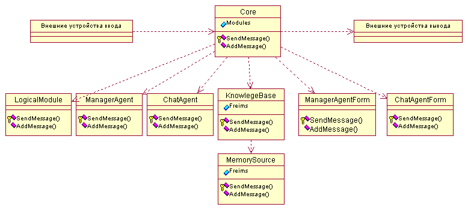

Структура программы AIAssistant
На рисунке изображена структура первой версии программы AIAssistant.

aiassistant1.rar
Программа имеет ядро.
К ядру подключаются следующие компоненты:
-
LogicalModule - модуль логического вывода.
Задачи LogicalModule:
- Произвести логический вывод по запросу.
-
ChatAgent - агент чат-бот.
Задачи ChatAgent:
- Дать ответ на введеное пользователем сообщение.
- Выдавать некоторые сообщения - приглашение к разговору, при длительном молчании пользователя.
-
ManagerAgent - агент для наблюдения и управления за компонентами, подкоючеными к ядру.
Задачи ManagerAgent:
- периодический опрос состаяния остальных компонентов системы.
- в случае "зависания" какого-либо компонента (если компонент не отвечает в течение длительного времени) - перезапустить компонент.
- установка оптимальных приоритетов для присоединеных агентов.
-
ChatAgentForm - форма для ввода/вывода текстовых сообщений для ChatAgent.
-
ManagerAgentForm - форма для просмотра и управления подключеными компонентами системы.
-
KnowlegeBase - база знаний.
Задачи KnowlegeBase:
- Вернуть фрейм из източника знаний по запросу.
-
MemorySource - источник знаний, находящийся в оперативной памяти.
Все фреймы загружаются в память из файла в начале работы программы и сохраняются в файл при завершении работы и периодически в процессе работы.
Каждый компонент системы имеет два метода:
protected SendMessage() - отправка сообщения ядру из компонента.
public AddMessage() - этот метод вызавает ядро при поступлении сообщения для компонента.
Предлагаю такие варианты этих методов:
protected int SendMessage(string msg);
protected int SendMessageA(AclMessage msg);
public int AddMessage(string msg);
public int AddMessageA(AclMessage msg);
SendMessage и AddMessage используются для передачи сообщений в виде строки текста.
SendMessageA и AddMessageA используется для передачи эеземпляров (объектов) ACL сообщений.
© Prof1983 2003-2010
22.04.2007 - 19.10.2010